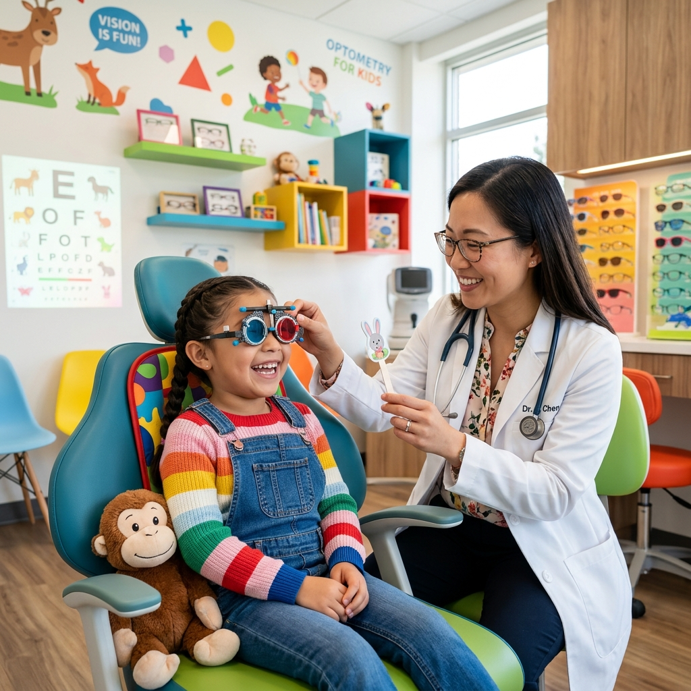
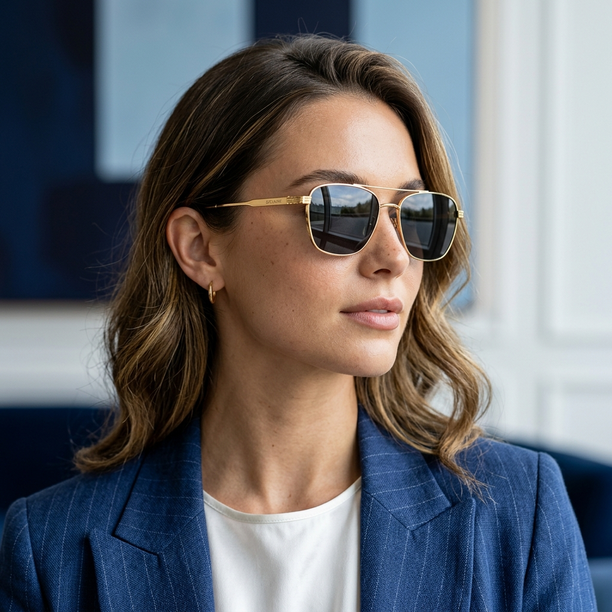
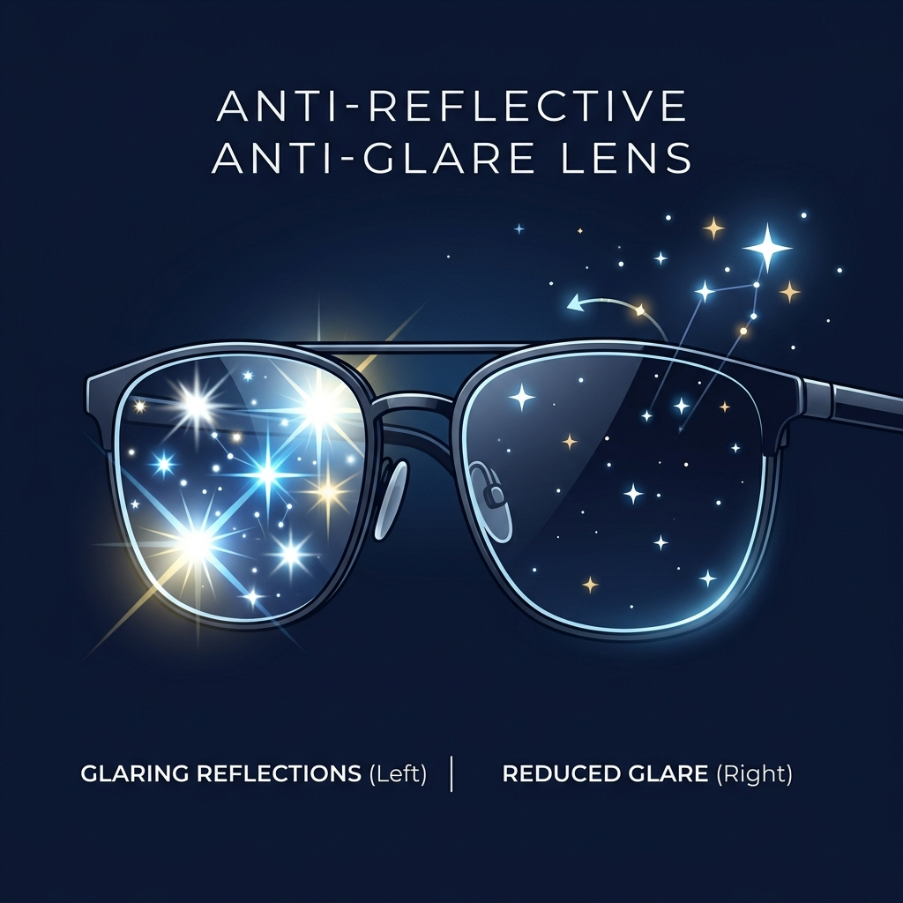
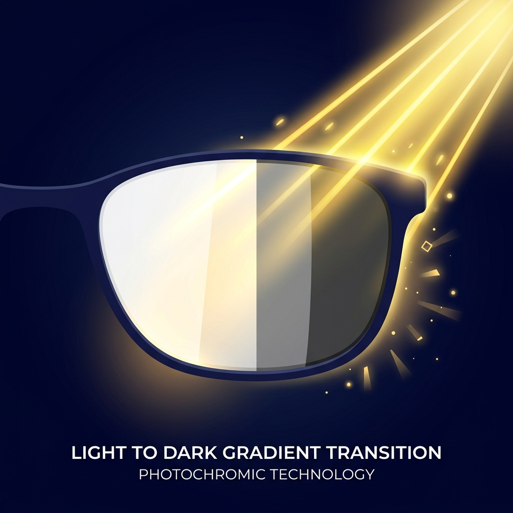

Practical, expert-backed guidance to help you protect your eyes at every stage of life.
Small daily habits make a measurable difference in long-term eye health.
Extended screen use can cause dryness, blurred vision, and headaches. Blue light filtering lenses and mindful breaks help significantly.

Early detection of vision issues supports learning and development. We recommend a first eye exam by age 3, then annually through school years.
UV exposure contributes to long-term eye damage, including cataracts. Quality sunglasses and UV-coated lenses are essential, year-round.

Annual exams catch more than vision changes — they're a window into overall health.

Catch glaucoma, cataracts, and diabetic retinopathy before symptoms appear.
Eye exams can reveal early signs of diabetes and hypertension.

Vision changes gradually — annual checks keep your correction accurate.
Protect your vision with a comprehensive checkup from our certified optometrists.